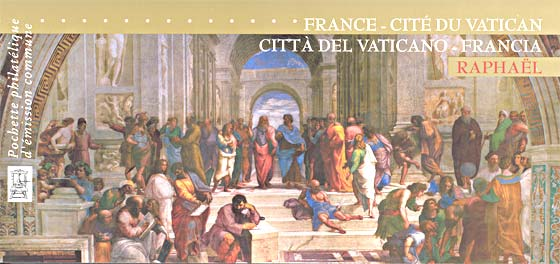
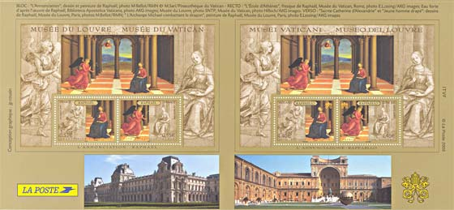
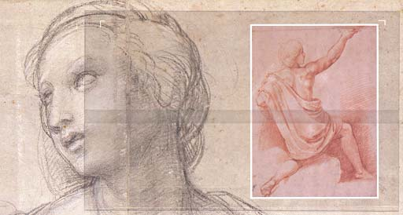
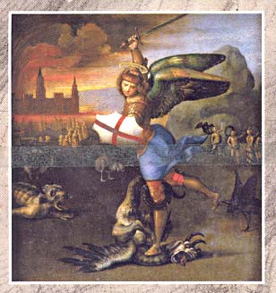
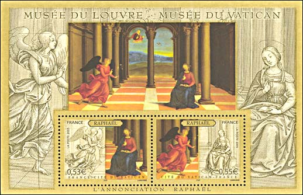
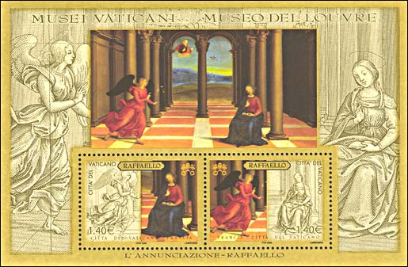

Raphael Philatelic Folder
Joint Issue France - Vatican 2005
I present below the very impressive philatelic folder (pochette philatélique) that was issued by the French post in 2005. It contains two miniature sheets that display the painting "The Annunciation" and the relating drawings. The miniature sheets, that were simultaneously issued by the French and the Vatican postal administrations. The folder shows also some other wonderful works of the classical Italian painter Raphael.
On the front page of the folder there is an excellent reproduction of The School of Athens painting. It is a complex allegory of philosophy, showing Plato and Aristotle surrounded by philosophers, past and present, in a splendid architectural setting. The School of Athens is probably the most famous of all Raphael's frescoes, and one of the culminating artworks of the High Renaissance.

The verso of the folder displays images of both miniature sheets, of the Musée du Louvre, Paris as well as of the Pinacoteca Apostolica Vaticano, Rome, Italy.

In the inner part we note the presence of two drawings by Raphael, both preserved in the Louvre Museum in Paris: "St. Catherine of Alexandria" and "Young Draped Man". Unfortunately, the transparent folder that holds and protects one of the miniature sheets covers some parts of the design.

Also in the inner part of the folder there is displayed the painting by Raphael "Archangel Michael Fighting the Dragon".

On both miniature sheets is shown the painting "The Annunciation" (created 1503-1504, oil on panel, transferred to canvas), found in the Pinacoteca Apostolica Vaticano, Rome, Italy, and the drawings made by Raphael for this painting, preserved in the Musée du Louvre, Paris.
About the subject of the painting: Annunciation – is told by Luke (1:26-38): 'the archangel Gabriel was sent by God' to Mary. Gabriel announced to her that she was to give birth to a son, Jesus, who 'will be great, and will be called Son of the Most High. The Lord God will give him the throne of his ancestor David, and he will be king over Israel for ever; his reign shall never end'. '"I am the Lord's servant," said Mary; "may it be as you have said." Then the angel left her.'

The drawings demonstrate the tremendous amount of thought which Raphael put into the realization of the painting itself. As well the positions of protagonists, as the combination of colors as the vast space which opens out beneath the colonnades of the Annunciation are very impressive

I can only highly recommend this unique folder and its contents to all lowers of classical art on postal stamp. A last word of recognition for merits goes to the designer of the folder, Mr. J.P. Cousin.